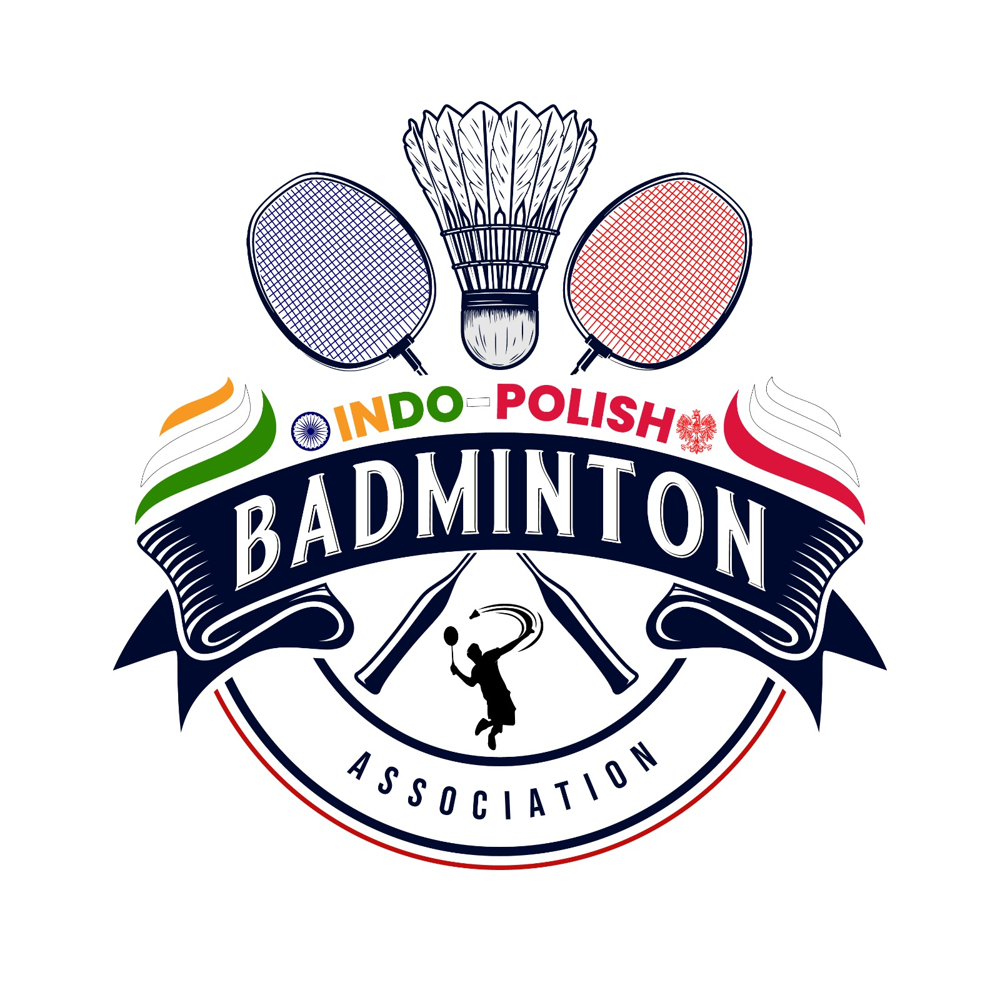

Niniejszy regulamin stanowi Umowę, w której stronami są Organizator oraz osoba zgłaszająca chęć udziału w imprezie lub jej przedstawiciel ustawowy, występująca jako Uczestnik.
Akceptacja regulaminu oznacza zgodę na warunki oraz zawarcie umowy.
„Stowarzyszenie Indo-Polish Sport” (Indo-Polish Badminton Association) Kraków.
godz. 09.00 - rozpoczęcie gier
godz. 14.00 - uroczyste otwarcie Mistrzostw
godz. 14.15 - ciąg dalszy gier.
Hala Fame Sport Club ul. Dekerta 21, 30-703 Kraków
Turniej w powyższych grach jest wliczany do cyklu III Grand Prix SIPS Krakowa
a) System rozgrywek grupowo-pucharowy w grach pojedynczych oraz w grach podwójnych (minimalna ilość uczestników w danej kategorii wynosi 3 osoby/pary). Organizator dopuszcza możliwość gry kobiet w dowolnej kategorii męskiej (za wyjątkiem gry podwójnej amator).
b) Mecze rozgrywane są do dwóch wygranych setów do 15 punktów.
c) 15 punkt kończy set.
d) System rozgrywek zostanie ustalony po zamknięciu listy zgłoszeń i będzie zapewniał maksymalnie dużą ilość gier możliwą do rozegrania w dniu turnieju. Po rozegraniu meczy grupowych z grupy wychodzi minimum 2 zawodników.
e) Gry prowadzone będą na 5 kortach. Single i deble rozgrywane będą do dwóch wygranych setów (punktacja zostanie ustalona bezpośrednio przed zawodami, będzie uzależniona od ilości zgłoszonych zawodników).
f) We wszystkich turniejach cyklu OTWARTE MISTRZOSTWA SIPS W BADMINTONIE nie będą rozgrywane mecze o 3-cie miejsce (miejsce 3 zdobywają zawodnicy którzy przegrali swoje gry półfinałowe).
Turnieje rozgrywane będą w trzech poziomach sportowych – Amator, Open oraz 4Fun:
a) Amator - to pełnoletni zawodnik nie posiadający nigdy wcześniej licencji PZBad. Do kategorii amator nie mogą się zgłaszać zawodnicy występujący w swojej karierze badmintonowej w turniejach rangi Mistrzostw Polski Elity, Mistrzostw Polski Seniorów oraz Mistrzostw Polski w kategoriach młodzieżowych. W uzasadnionych przypadkach po uprzednim poinformowaniu Organizatora istnieje możliwość indywidualnego podejścia do zgłaszającego się zawodnika i w rezultacie dopuszczenie go do gier mimo posiadanej licencji.
b) Open - to pełnoletni zawodnik nie posiadający licencji PZBad w przeciągu ostatnich 5 lat. Dopuszcza się zawodników z licencją PZBad powyżej 25 lat - kobieta i 30 lat mężczyzna (zgodnie z Regulaminem Seniorów pkt. Va.2 - na stronie http://ebadminton.com.pl)
c) 4Fun - osoby które zaczynają swoją przygodę z badmintonem.
Zwycięzcą w klasyfikacji generalnej w poszczególnych kategoriach, mogą być pary, które grały razem wspólnie w minimum 2 turniejach.
Pracownicy oświaty, chcący wziąć udział w kategorii nauczyciel/samorządowiec, nie muszą obecnie praktykować zawodu.
Posiadanie sprzętu sportowego do badmintona - strój, obuwie, rakieta do badmintona.
Każdy pełnoletni uczestnik imprezy startuje w zawodach na własną odpowiedzialność, co potwierdza własnoręcznym podpisem w biurze zawodów.
W przypadku niepełnoletnich uczestników wymagana jest zgoda opiekuna prawnego na udział w zawodach na piśmie - wzór oświadczenia stanowi załącznik do regulaminu.
Uczestnik przyjmuje do wiadomości, że udział w zawodach wiąże się z wysiłkiem fizycznym i pociąga za sobą naturalne ryzyko i zagrożenie wypadkami, możliwość odniesienia obrażeń ciała i urazów fizycznych.
Warunkiem dopuszczenia zawodnika do zawodów będzie złożenie podpisu pod oświadczeniem o starcie w imprezie (oświadczenie o stanie zdrowia) na własną odpowiedzialność. Przekazanie Organizatorowi podpisanego oświadczenia oznacza, że uczestnik rozważył i ocenił charakter, zakres i stopień ryzyka wiążącego się z uczestnictwem w imprezie i dobrowolnie zdecydował się podjąć to ryzyko startując w zawodach wyłącznie na własną odpowiedzialność.
Zgłoszenia do wszystkich gier przyjmowane będą do 26 listopada 2026 roku - do godz. 22.00, za pośrednictwem formularza rejestrowego pod adresem: IPBA (Ace Badminton) - Tournament November, 2026 - @ Fame Sports Klub, Krakow. Jeżeli zawodnik/czka nie ma partnera/ki do gry podwójnej, a chciałaby zagrać drugą grę w Grand Prix SIPS Krakowa, należy o tym poinformować w zgłoszeniu sędziego głównego poprzez dodanie dopisku "Szukam Partnera do gry debel/mixt".
50 zł za jedną kategorię / 90 zł dwie kat. (każdy zawodnik może wystąpić max. w 3 kategoriach lecz maksymalnie w 2 kategoriach gry podwójnej np. 1 x singiel + 1 x debel + 1 x mixt, lub 1 x debel i 1 x mixt).
medale oraz nagrody rzeczowe wg. możliwości organizatora
Organizator nie ubezpiecza startujących zawodników, natomiast rekomenduje ubezpieczenie się indywidualne Zawodniczek i Zawodników.
W trakcie trwania imprezy będzie zbierany materiał prasowy wraz z wizerunkiem. Zgodnie z Ustawą z dnia 26 stycznia 1984 r. prawo prasowe Dz.U. 1984 nr 5 poz. 24 w związku z Ustawą z dnia 10 maja 2018 r. o ochronie danych osobowych Dz.U.2018 poz. 1000 utrwalanie i dalsze przetwarzanie wizerunku w mediach odbywać się będzie bez zgody, z racji wyłączenia z pod regulacji Rozporządzenia 2016/679. Uczestnicy zgadzają się na publikację zdjęć, filmów ze swoim udziałem oraz imienia i nazwiska wyłącznie na potrzeby organizacji turnieju i prezentacji wyników na stronach: www.ipba.pl, Facebook Krakow Badminton oraz profilach IPBA.
Rodzaj lotek jest ustalany przez zawodników przed rozpoczęciem meczu. W razie braku porozumienia pierwszeństwo ma lotka piórowa. Kolejność lotek według rankingu PZBad.
Organizator zapewnia lotki nylonowe.
W sprawach spornych, nie ujętych w niniejszym komunikacie, decyduje organizator lub/i sędzia zawodów.
Ostateczna interpretacja regulaminu należy do Organizatora.
W związku z wejściem w życie Rozporządzenia Parlamentu Europejskiego i Rady (UE) 2016/679 z dnia 27 kwietnia 2016 r. w sprawie ochrony osób fizycznych w związku z przetwarzaniem danych osobowych i w sprawie swobodnego przepływu takich danych oraz uchylenia dyrektywy 95/46/WE (ogólne rozporządzenie o ochronie danych), powszechnie nazywanym RODO, informujemy, że:
Administratorem danych osobowych jest „Stowarzyszenie Indo-Polish Sport” (31-202 Kraków) przy ulicy Prądnickiej 36, tel: +48 661632000, e-mail: neomedica4000@gmail.com
Podanie danych jest dobrowolne, jednak odmowa ujawnienia danych organizatorowi skutkować będzie brakiem możliwości wzięcia udziału w zawodach.
Dane osobowe przetwarzane będą w celu prawidłowej organizacji imprezy, zapewnienia bezpieczeństwa oraz wyłonienia zwycięzcy/laureatów, czyli prawidłowej realizacji umowy, w oparciu o art. 6 ust. 1 lit. b Rozporządzenia Parlamentu Europejskiego i Rady (UE) 2016/679.
Odbiorcami danych mogą być podmioty uprawnione do tego na mocy przepisów prawa oraz sędzia główny.
These regulations constitute an Agreement between the Organizer and the Participant (or legal guardian). Acceptance of the regulations implies consent to the terms and the conclusion of the agreement.
“Indo-Polish Sport Association” (Indo-Polish Badminton Association) Kraków.
9.00 AM - Start of matches
2.00 PM - Official opening of the Championships
2.15 PM - Continuation of games.
Fame Sport Club Hall, ul. Dekerta 21, 30-703 Kraków
The tournament is included in the III SIPS Krakow Grand Prix cycle.
a) Group-playoff system for singles and doubles (minimum 3 players/pairs per category). Women may play in any men's category (except Amateur Doubles).
b) Matches played to 2 winning sets of 15 points.
c) A set ends at 15 points.
d) The tournament system will be finalized after the registration closes to ensure the maximum number of matches. At least 2 players advance from each group after group stage matches.
e) Matches will be held on 5 courts. Singles and doubles will be played to two winning sets (scoring format determined directly before the tournament depending on the number of registered players).
f) No matches for 3rd place will be played across all tournaments of the SIPS OPEN BADMINTON CHAMPIONSHIPS cycle (3rd place is awarded to both players who lost their semi-final matches).
The tournament will be played across three skill levels – Amateur, Open, and 4Fun:
a) Amateur - Adult player who has never held a PZBad (Polish Badminton Association) license. Players who have competed in Elite, Senior, or Youth Polish Championships are excluded. Individual cases may be considered by the Organizer upon prior notice.
b) Open - Adult player without a PZBad license in the last 5 years. Players with a license are allowed if over 25 (women) or 30 (men) according to senior regulations.
c) 4Fun - Individuals who are just beginning their adventure with badminton.
General classification winners in specific categories must have played together as a pair in at least 2 tournaments.
Education sector employees participating in the teacher/local government category do not need to be currently practicing the profession.
Participants are required to possess their own badminton sports equipment, including a proper sports outfit, indoor sports shoes, and a badminton racket.
Each adult participant enters the competition at their own risk and responsibility, which is confirmed by a handwritten signature at the tournament office prior to the start of the games.
In the case of minor participants, written consent from a legal guardian is required to participate in the competition. A template for this declaration is provided as an annex to these regulations.
The participant acknowledges that participation in the competition involves significant physical effort and entails natural risks, the danger of accidents, and the possibility of bodily injury or physical trauma.
A condition for admitting a player to the competition is the signing of a declaration regarding their participation in the event (health status declaration) at their own risk. Providing the Organizer with a signed declaration means that the participant has considered and assessed the nature, scope, and degree of risk associated with participation in the event and has voluntarily decided to undertake this risk, competing solely at their own responsibility.
Registration for all games is open until November 26, 2026 (10:00 PM) via the registration form at: IPBA (Ace Badminton) - Tournament November, 2026 - @ Fame Sports Klub, Krakow. If looking for a partner for doubles/mixed and wishing to play a second event in the SIPS Krakow Grand Prix, please notify the head referee in the registration by adding the note: "Looking for Partner for doubles/mixed."
50 PLN (1 category) / 90 PLN (2 categories). Max 3 categories per player (with a maximum of 2 doubles/mixed categories combined, e.g., 1 singles + 1 doubles + 1 mixed, or 1 doubles + 1 mixed).
Medals and prizes subject to the Organizer's capacity.
Individual insurance is recommended. Press materials and images will be collected. Under applicable press and data protection laws, image recording and processing in media for tournament organization and result presentation on www.ipba.pl and IPBA/Krakow Badminton Facebook profiles will take place without additional consent. The type of shuttle is agreed upon by players before the match begins (feather shuttle takes priority in case of disagreement). Nylon shuttles are provided by the Organizer.
In disputed matters not covered by these regulations, the organizer and/or tournament referee decides. The final interpretation of the regulations belongs to the Organizer.
Data Controller: Indo-Polish Sport Association, ul. Prądnicka 36, Kraków. Phone: +48 661632000, e-mail: neomedica4000@gmail.com. Data is processed for event organization purposes, ensuring safety, and determining winners according to Art. 6(1)(b) of the GDPR. Recipients may include authorized entities under the law and the head referee.